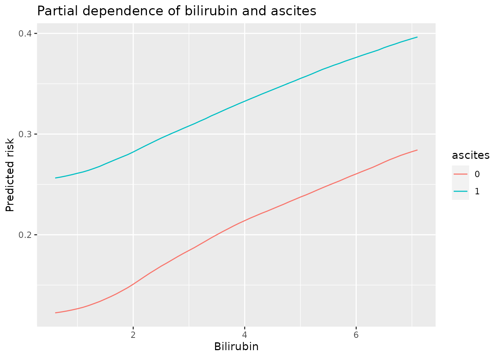

This vignette covers core features of the aorsf package. A separate vignette covers each feature in more detail.
- For variable importance, see
variable_importance.Rmd - For two-way interactions, see
variable_interaction.Rmd - For partial dependence, see
partial_dependence.Rmd
Background: Oblique RSF
The oblique random survival forest (RSF) is an extension of the axis-based RSF algorithm. Numerous R packages offer axis-based splits for survival decision trees, including RandomForestSRC, party, and ranger.
What is an oblique decision tree?
Decision trees are developed by splitting a set of training data into two new subsets, with the goal of having more similarity within the new subsets than between them. This splitting process is repeated on the resulting subsets of data until a stopping criterion is met. When the new subsets of data are formed based on a single predictor, the decision tree is said to be axis-based because the splits of the data appear perpendicular to the axis of the predictor. When linear combinations of variables are used instead of a single variable, the tree is oblique because the splits of the data are neither parallel nor at a right angle to the axis.

Decision trees for classification with axis-based splitting (left) and oblique splitting (right). Cases are orange squares; controls are purple circles. Both trees partition the predictor space defined by variables X1 and X2, but the oblique splits do a better job of separating the two classes.
Accelerated ORSF
The purpose of aorsf is to provide routines to fit oblique RSFs that will scale adequately to large data sets. For example, aorsf::orsf() runs about 500 times faster than its predecessor, obliqueRSF::ORSF().
To fit an accelerated ORSF model, use the orsf function:
library(aorsf)
library(ggplot2)
set.seed(329)
orsf_fit <- orsf(data_train = pbc_orsf,
formula = Surv(time, status) ~ . - id,
n_tree = 2500)
orsf_fit
#> ---------- Oblique random survival forest
#>
#> N observations: 276
#> N events: 111
#> N trees: 2500
#> N predictors total: 17
#> N predictors per node: 5
#> Average leaves per tree: 19
#> Min observations in leaf: 5
#> Min events in leaf: 1
#> OOB C-statistic: 0.84
#>
#> -----------------------------------------you may notice that the first input of aorsf is data_train. This is a design choice that makes it easier to use orsf with pipes (i.e., %>% or |>). For instance,
Variable importance
The coefficients that are used in linear combinations of input variables are a unique characteristic of ORSF that can be used for model interpretation.
For example, to estimate the importance of a variable, ORSF multiplies each coefficient of that variable by -1 and then re-computes the out-of-sample (sometimes referred to as out-of-bag) accuracy of the ORSF model.
variable_importance <- orsf_vi(orsf_fit)
variable_importance
#> bili age copper protime ascites
#> 0.0153637831 0.0125514296 0.0073954482 0.0061975939 0.0056767877
#> stage spiders sex edema ast
#> 0.0048434977 0.0042706109 0.0038018853 0.0030777167 0.0026040310
#> hepato albumin alk.phos trig chol
#> 0.0022915473 0.0014061768 0.0002604031 -0.0001562419 -0.0007812093
#> trt platelet
#> -0.0011978543 -0.0023436279Variable interaction
Another application of linear combination coefficients is measuring a two-way interaction score. ORSF’s two-way interaction score for a pair of predictors is the proportion of variability in the coefficient of one predictor explained by the mean of the other. So if one predictor’s coefficient is highly correlated with another predictor’s mean value, the two-way interaction score will be high (maximum value of the score is 1). If there is no correlation between the coefficient of one predictor and the mean value of another, the two-way interaction score will be low (minimum value of the score is 0).
variable_interaction <- orsf_interaction(orsf_fit)
variable_interaction[1:5, ]
#> v1 v2 value
#> 1: edema_1 bili 0.09516179
#> 2: ascites_1 bili 0.08722359
#> 3: ascites_1 hepato_1 0.08607192
#> 4: hepato_1 edema_1 0.08104954
#> 5: edema_1 copper 0.07484794Partial dependence
The orsf_interaction() function indicated that ascites and bili have a strong interaction score, and the orsf_vi() function indicated that bili is the most important predictor. We can use the orsf_pd() function (pd stands for partial dependence) to explore how these variables influence predicted risk from ORSF.
We’ll use orsf_pd_summary below to compute the expected predicted risk for a range of bili values when ascites is either 0 or 1.
pd_spec <- list(ascites = c("0","1"),
bili = seq(0.6, 7.1, by = 0.1))
pd_data <-
orsf_pd_summary(object = orsf_fit,
pd_spec = pd_spec,
times = 1000)
ggplot(pd_data) +
aes(x = bili, y = mean, col = ascites) +
geom_line() +
labs(y = 'Predicted risk',
x = 'Bilirubin',
title = 'Partial dependence of bilirubin and ascites')
The presence of ascites clearly has a large effect on predicted risk, which makes it hard to see the interaction effect in this plot. We’ll align the partial dependence values for both ascites groups so that both curves will start at a prediction of 0
# aligning predictions at lowest value of bili
min_asc_0 <- with(pd_data, mean[ascites == 0 & bili == 0.6])
min_asc_1 <- with(pd_data, mean[ascites == 1 & bili == 0.6])
pd_data_aligned <-
within(pd_data, {
mean[ascites == 0] <- mean[ascites == 0] - min_asc_0
mean[ascites == 1] <- mean[ascites == 1] - min_asc_1
})
head(pd_data_aligned)
#> ascites bili mean lwr medn upr
#> 1: 0 0.6 0.0000000000 0.005571336 0.05164828 0.5479384
#> 2: 1 0.6 0.0000000000 0.112882689 0.20368704 0.7139951
#> 3: 0 0.7 0.0007918855 0.005450950 0.05087316 0.5511908
#> 4: 1 0.7 0.0009444713 0.113058207 0.20441990 0.7175981
#> 5: 0 0.8 0.0017398735 0.005524165 0.05280451 0.5569397
#> 6: 1 0.8 0.0020742942 0.113703363 0.20568055 0.7206198With the aligned partial dependence values we can see the interaction effect clearly. Increasing bilirubin solicits a greater increase in predicted risk for patients who do not have ascites versus patients who do. This is fairly intuitive as increased bilirubin may be a sign of undetected ascites.
ggplot(pd_data_aligned) +
aes(x = bili, y = mean, col = ascites) +
geom_line() +
labs(y = 'predicted risk, centered at Bilirubin = 0.6',
x = 'Bilirubin',
title = 'Interaction between bilirubin and ascites')
What about the old ORSF?
The old ORSF (i.e., obliqueRSF) used glmnet to find linear combinations of inputs. aorsf allows users to implement this approach using the orsf_control_net() function:
orsf_net <- orsf(data_train = pbc_orsf,
formula = Surv(time, status) ~ . - id,
control = orsf_control_net(),
n_tree = 50)Note that the net approach is a fair bit slower than the cph one!
# tracking how long it takes to fit 50 glmnet trees
print(
system.time(
orsf(data_train = pbc_orsf,
formula = Surv(time, status) ~ . - id,
control = orsf_control_net(),
n_tree = 50)
)
)
#> user system elapsed
#> 3.415 0.000 3.416
# and how long it takes to fit 50 cph trees
print(
system.time(
orsf(data_train = pbc_orsf,
formula = Surv(time, status) ~ . - id,
control = orsf_control_cph(),
n_tree = 50)
)
)
#> user system elapsed
#> 0.027 0.000 0.027